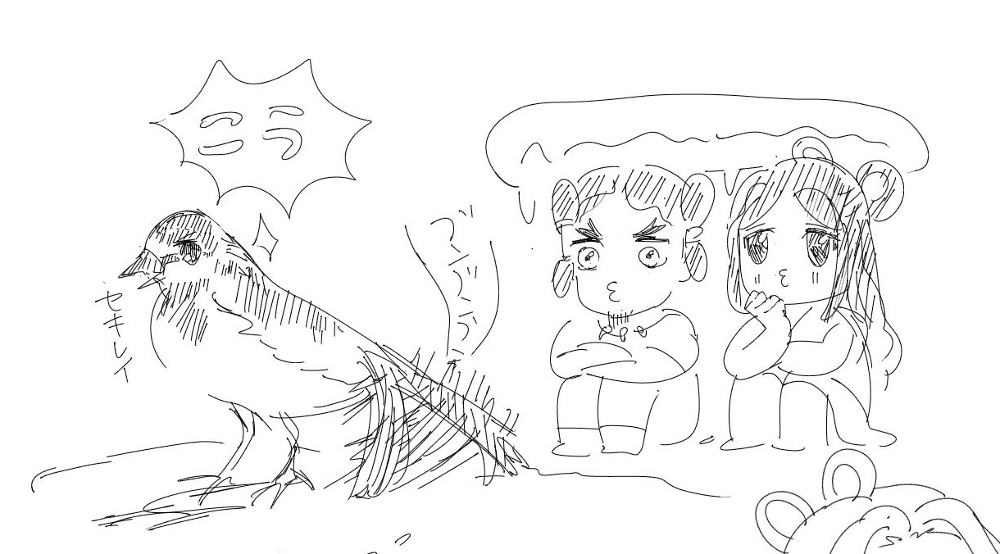

新月から満月の間に出る右半円状の月。弓でいう弦の形を上にして沈んでいくことからついた呼び名。上つ弓張（かみつゆみはり）、上の弓張(かみのゆみはり)ともいう。
満月から次の新月の間に出る左半円状の月。弓でいう弦の形を下にして沈んでいくことからついた呼び名。下つ弓張（しもつゆみはり）、下の弓張(しものゆみはり)ともいう。
天の中心を通っているかのように見える冬の満月。中国宋の邵康節（しようこうせつ）の詩「清夜吟」の一節「月天心に到る処」から。
空いっぱいに輝く月。満月
夜空一面の星。
夕暮れ、西の空に見える金星。宵の明星、黄昏星ともいう。
月で桂の木を切る人、または七夕の夜に彦星を乗せて天の川を渡る渡し守。
上弦の月のこと。形が舟を連想させることから。
月の神。古事記ではイザナギが黄泉の国のけがれをすすいだときに生まれたとされる。天照大神の弟。
月が出る直前、東の空が白々と明るく見えること
明け方になっても残っている月
月の異名。月の中にウサギがすむという伝説から。太陽には三本脚のカラスがいるという想像から生まれた太陽の異名「金烏（きんう）」と対になっている。
金烏玉兎（きんうぎょくと）の略で、太陽と月のこと。また、月日や歳月のこと。烏兎匆匆（うとそうそう）は月日のたつのは早いという意味。
満月が雨雲で見られないこと
星の光が月のように明るく見える夜
冷たい空気の中で冴えわたる冬の月のようす
天の川の異名
天の川の異名
月の光により生じる虹。月光虹、ムーンボウともいう。
「綺羅、星の如し」から生まれた語。きらきらと光り輝くたくさんの星。綺は綾織の絹、羅は薄絹のことで、綺羅は美しい衣服の意。
細い形の月
彗星の古称。
星座。
火星の和名。火夏星（ひなつぼし）ともいう。
中国で古くから知られている肉眼で見える五つの太陽系の惑星。歳星（木星）・熒惑(けいわく)（火星）・鎮星（土星）・太白(たいはく)（金星）・辰星(しんせい)（水星）。これに日・月を加えたものを七曜と呼ぶ。
火星の漢名。中国の伝説では、熒惑は子どもの姿になって地に降り、子どもたちにまじって遊びながら、未来を予言する歌を歌うとされる。すぐれた歌い手のもとを毎夜たずねてきて一緒に歌遊びをし、明け方海の中へ消える人の話を聞いた当時9歳の聖徳太子が、それは熒惑星だと言ったという話が伝えられている（『聖徳太子伝暦』）。
インド天文学が扱う9つの天体とそれを神格化したもの。唐の時代に中国に伝えられた。七曜に計都星、羅睺星を加えたもの
九曜の一つで架空の星。両手に日月を捧げ、憤怒の顔で青龍に乗って現れる。
九曜の一つで架空の星。太陽と月を飲み込んでは日食や月食を起こすとされる。
霧や靄などに包まれてほのかにかすんで見える春の月
朧月の夜
陰暦十三日の夜。またはその夜の月。特に旧暦九月十三日の夜の月は中秋の名月（旧暦八月十五日）に並ぶ名月とされ、お供えするものにちなんで「栗名月」「芋名月」「豆名月」ともいわれる。
陰暦十六日の夜。またはその夜の月。日没後にためらう（＝いざよう）ように遅れて出る月の意から
中国の伝説で、月に仙女の住む広寒宮という宮殿があるとされていることから生まれた言葉。唐の玄宗は中秋の夜に遊んだとされる。月宮殿ともいう。
流れ星の異名。ほかに星の嫁入り、雉星、花火星、抜け星（岡山の方言）などの異名がある。
沖縄県石垣島などでの流れ星の異名。流星を遊びに来た星に見立てた。
彗星の異名。ほかに妖星、扇星、穂垂れ星（ほたれぼし）などの異名がある。
獅子座を糸繰車に見立てた和名
うしかい座の１等星アルクトゥールスの和名。梅雨入りする時期に南中することから。ほかに雨夜の星（あまいのほし) 、鳩星、麦星などの異名がある。
おとめ座スピカの和名。
アルクトゥールスとスピカを夫婦に見立てた呼び名。春の時期に一緒にいるように見えることから。
ふたご座のポルックスとカストルの色を金と銀に見立てた呼び名。ほかに二つ星、猫の目、犬の目、眼鏡星などの呼び名がある。
北極星の和名。地球の自転に伴って他のすべての星が北極星を中心に回っているように見えることから
美しい二重星として知られるはくちょう座のβ星アルビレオのこと。金色の主星と青い伴星が寄り添っているところがトパーズとサファイアのように見えることから。
大犬座α星シリウスの中国名。青白い輝きを狼の目の光にたとえたもの。青星、雪星、絵の具星、光坊主などの異名もある。
すてきなことには邪魔がはいりやすく長続きしないことをたとえたことわざ
ケフェウス座のμ星“the Garnet Star”の和名。赤く輝く星であることから赤い宝石の名前がつけられた。
日本の神話に唯一現れる星の神。『日本書紀』のみ記載。邪神とされる。天香香背男（あめのかがせお）、星神香香背男（ほしのかがせお）、香香背男（かがせお）の異名がある。
埼玉県・秩父地方のかんむり座の呼び名。藤原秀郷との戦いに敗れた平将門が敗因を愛妾である桔梗の前の内通と決めつけて斬り捨て、その死を哀れんだ秀郷が桔梗の前の首飾りを空に投げたところ、 首飾り星になったという伝説から。
播州本島・女木島のりゅうこつ座α星カノープスの呼び名。紀州の方角に見えることから。兵庫県播州地方では寒くなると出ることから寒寒星（さむさむぼし）、四国の上を這うように通って芋畑の芋を食べているように見えることから芋食い星と呼ばれていた。中国名は南極老人星。
『太平記』に登場する妖しい星。天下が乱れるときに現れるとされる。
陰暦7月7日の夜に、牽牛と織女の星が天の川を渡って逢うこと。七夕の異名。ほかに「星の契」「星祭」「星今宵」「星の恋」などの異名がある。
秋になって着る衣服。牽牛と織女が七夕の夜着る衣。「織女（たなばた）の五百機(いほはた)立てて織る布の秋去衣誰か取り見む」（万葉集）
秋去衣を織る女。七夕の織女の別名。織女にはこのほか朝顔姫、薫姫（たきものひめ）、糸織姫、蜘蛛姫(ささがにひめ)、蜘蛛姫(ささがにひめ)、百子姫(ももこひめ)の合わせて7つの異称がある。
七夕の夜、牽牛と織女の星が出逢えるようにカササギが翼を並べて天の川に渡す橋を作ったという中国の伝説から生まれた言葉。男女の恋の橋渡しのたとえにも使われる。
七夕の夜に降る雨。逢瀬が叶わなかった牽牛と織女が悲しんで流す涙の雨とも、逢瀬の後に流す涙が雨になったものともいわれる。「洒」は注ぐの意。
細身でかっこいい男（ささら＝細い、えおとこ＝いい男）。月の異名
セキレイの異名。イザナギとイザナミの二神がセキレイを見て夫婦の交わり方を知ったという神話による。恋知り鳥ともいう。
秋の虫がいっせいに鳴く声を時雨になぞらえた語
恋い慕う気持ちを蛍の光に例えた言葉
春の陽気にうとうとすることを人の目を借りに来た蛙のせいにする言葉
カワウソが獲った魚類をすぐに食べずに川岸に並べる習性が祭りに見えることから、文を書いたりするときなどにたくさんの資料を広げるさまを指す。「獺(かわうそ)魚を祭る」の短縮形。俳人の正岡子規は「獺祭書屋(しょおく)主人」という別号を持つ。
寒さで凍ったように動かずにいる蝶
寒さを防ぐために雀が羽毛をふくらませて丸くふくれている様子
寒さでちぢこまり、温かい場所でじっとしている猫。
寒さを嫌って火の消えたかまどにもぐって灰だらけになる猫
こたつで丸くなる猫
恋に夢中になって鳴きながら浮かれ歩く猫
ウグイスの別名。
春に来るたくさんの鳥
実際に亀が鳴くことはないが、春になるとなんとなく鳴きそうだということで古くから俳句などに使われている不思議な季語。鎌倉時代の和歌「川越のをちの田中の夕闇に何ぞと聞けば亀のなくなり」（藤原為家）が典拠とされる。
夜鳴く十鳥
ニシンの異名
春のうららかな陽気で獰猛な鷹も鳩になるという古代中国の俗信。七十二候の一つ。三月十六日～二十日頃。
腐った草が変化して蛍になるという古代中国のの俗信。七十二候の一つ。
月夜に浮かれて鳴く烏。夜遊びする人のたとえ。
ワスレガイの異名。拾うと恋を忘れられるとされていることから。
白い鷺のこと。中国・宋時代の宰相、李昉(りほう)が5種の鳥を飼い、鶴を仙客、孔雀を南客、オウムを隴客、ハッカンを閑客、白い鷺を雪客と名付けたという故事から
スズメ目ヒタキ科に属する小鳥。ナイチンゲール。
不如帰（ホトトギス）の異名。蜀の望帝が退位後に復位を望んだが、死んでホトトギスとなり、「不如帰（帰るにしかず）」と鳴いた故事から、昔を懐かしむ鳥とされた。
蝶の異名。「胡蝶の夢」の故事に由来する。夢虫ともいう。
蝶の異名。
中国の思想家・荘子が蝶になって舞う夢から覚めたあと、果たして自分が蝶になった夢を見たのか、それとも今の自分は蝶の夢の中なのかわからなくなったという故事（『荘子』斉物論）から生まれた言葉。現実と夢との境目があいまいであること、あるいははかない人生のたとえに使われる。
（うぐいす、ほととぎすなどが）その季節に初めて鳴く声
春の野にいる馬。または新春の祝いに紙で作った馬の頭をもって家々を歌い舞って歩き、祝儀をもらう江戸時代の門付芸。
夕方に打ち寄せる波の上を飛ぶチドリのこと。柿本人麻呂の造語。
空高く舞い上がってさえずるヒバリ
「翡」は雄のカワセミ、「翠」は雌のカワセミで、もともとはカワセミを意味する中国語。羽の色が美しいことから、宝石の名前にも使われるようになった
蓑虫の異名。『枕草子』で、親である鬼に秋風が吹くころに迎えに来ると嘘をつかれて捨てられた蓑虫が秋になるたびに「ちちよ、ちちよ」と儚げに鳴くと書かれていたことから。
ありえないこと、めったにないことのたとえ。
「平家物語」などに登場する日本の妖怪。頭は猿、胴体は狸、虎の手足を持ち、尾は蛇、「ヒョーヒョー」と鳴くとされる
にぎりの部分に鳩の飾りをつけた老人用の杖。食べるときにむせない鳩にあやかり、老人の健康を祈る目的で用いる。
（熊野神社の霊験を説き、神社の鳩のエサのためといって金品をだまし取った者がいたことから）詐欺師
ススキの穂（尾花）が出てくる頃、産卵後で味が落ちたタコのこと
盆の上に雪で兎の形を作ったもの。目は南天などの赤い実を、耳は青い葉をつけ兎の形にする。
牡丹の花の下に眠っていた子猫が人の気配を感じて起きて逃げてしまった。 この猫は寝ていたのか、 寝ているふりをしていたのか、と問う禅問答
青森の表現で、ヒバリがエサを取る地面を隠すような4月の雪のこと。
晩秋になっても穴に入らず、迷っているような蛇のこと
冬、翼の間に首を入れて丸くなり、水面に浮いたまま寝ている水鳥のこと。
月にいるとされるウサギのこと
葉と葉の間に連なったように咲いている椿の花のこと。万葉集の有名な和歌「巨勢山（こせやま）の つらつら椿 つらつらに 見つつ偲（しの）はな 巨勢の春野を」（坂本人足）より。
花の蕾がほころぶこと、または花の蕾がほころぶようなはなやかな微笑み
桜の花を求めて歩きまわること。
花を入れて凍らせた氷柱。
寒い時期に作られた紅。色が鮮やかで美しいとされる。
藻塩をとるために用いる海藻。掻き集める→書き集めるの連想からも、随筆や手紙を指すこともある。
紅葉して日光に照り映える葉
花を見ながら散歩すること
夕方の薄明りの中に見える草、または夕方、物陰に咲く草花
花のつぼみが開くことを、下ひもが解けるのに見立てた語
ユリ科の 萱草 ( かんぞう )の異名。身に付ければ憂いを忘れる草として和歌に詠まれた。
勿忘草（ワスレナグサ）の異名
ヤマブキの異名。室町時代の歌学書『蔵玉和歌集』に収録されている、男女が泣く泣く別れる際にお互いの面影をうつした鏡を合わせて埋めたところ、そこからヤマブキが芽吹いたという歌から。
雪の季節まで花が残っている遅咲きの冬菊の異名
シクラメンの異名
舞い散る桜の花びらを、空が降らせた覚えのない雪にたとえた言葉。空知らぬ雪ともいう。
曼殊沙華の異名
オシロイバナの異名。夏の夕方にひっそりと花を咲かせることから
明治から大正期の白樺派歌人・木下利玄がオオイヌノフグリの異名として和歌に用いた造語。大犬の陰嚢よりはおしゃれな名前だが定着はいまひとつ。
水面に散った花びらが連なって流れるさまを筏に見立てた語。
水面に浮かび漂う落ち葉を船に見立てた言葉
真紅の蓮の花。猛火の燃え立つさま
ユズリハ科ユズリハ属の常緑高木。春に若葉が出ると前年の葉が譲るように落葉することからその名がついた。
漢名に和名であるドウダンツツジをあてたもの。この木の枝に降り注いだ霊水が壺状の珠になり、満天の星のように輝いたという中国の故事から。
生え始めたばかりの柔らかい草。和歌では「にこよか」「若かへに」「花つ妻」を導く序詞を構成する。
ススキの異名。秋風にゆれるさまが別れを惜しんで袖を振っているように見えることから
スミレの異名。「春の野に すみれ摘みにと 来し我そ 野をなつかしみ 一夜寝にける」という万葉集の和歌から名付けられた。
萩の異名。古代の鹿が萩を好んでよく寄り添っていたことから。
桜の異称。ほかに挿頭草(かざしぐさ)、春告草など。
スズランの異名。花が葉の下に咲いて影に隠れているようにみえることから。谷間の姫百合ともいう。
樹木にやどる精霊、老木などに棲む妖怪。山や谷で音が反響するのはこの精霊が返事しているとかんがえられたことから、やまびこを意味することもある。
風に散る花びら
夜桜の風情を引き立てるために木の下で焚くかがり火
夜桜の風情を引き立てるために木の下にともす雪洞
何かを好きになると推しにつながりのあるものまで好きになってしまうこと、または推しにつながりのあるもの。「草のゆかり」ともいう。古今和歌集の和歌にちなむ。
白い綿毛のついたヤナギの種子。中国では晩春に春の風にのって白い柳絮が淡雪のように飛び漂うのが風物詩となっており、古くから漢詩に詠まれてきた
モクセイ科の常緑低木。干した花がジャスミン茶の香りづけに用いられる。
スノードロップの和名
野山に花をもたらす中国の花の精。中国・明代の書物『月令広義』に記され、「花咲か爺」の元ネタとされる。
遠方くの山に咲いている桜
ジンチョウゲの異名。七里先まで花の香りが届くという意味
金木犀の異名。九里先まで花の香りが届くという意味
数多くの桜が生えている場所。奈良県吉野山の「吉野の千本桜」が有名。「一目千本」はたくさんの桜を一望できる場所
大宰府への左遷を前に菅原道真が自邸の梅の木に「東風吹かば にほひをこせよ 梅の花 主なしとて 春を忘るな」と詠みかけたところ、好き…という気持ちが抑えられず太宰府の庭まで飛んでついてきたという伝説の梅の木
常に咲いたばかりのように清新で美しい花
花の枝を折って持ち去る人。狂言「花盗人」は、捕らえられた花盗人が主人と桜にちなんだ古い和歌の応酬をして許される。
春の訪れを告げる梅の花を、鶯がくちばしで縫い上げた笠に見立てた言葉。
大根や蕪などの芽生えたばかりの菜。若い双葉が開くさまを貝を二つに割った形に見立てた言葉
ツユクサの古名。朝咲いても夕方には枯れてしまうことから、はかなさの比喩として使われる。蛍草、帽子花などの異名もある。
桜の花びらが散ったあとに萼に残った濃い紅色のおしべとめしべが降ること。
夕日に照り映える紅葉
ヒナゲシの異名。虞美人は中国の故事「四面楚歌」で知られる楚の項羽の愛人で、項羽の辞世の詩に合わせて舞ったのちに自殺。その墓の上にヒナゲシが咲いたという伝説から。
梅の異名。春風を待ってともに花開くことから。
雲、霞、靄が集まり、ゆっくりたなびさま
雲のたなびくさま
雲や霧などで空が曇ること。
雨に降られて外出せずに引きこもること
雨が降り出しそうな空の様子。雨模様
沫のようにやわらかく消えやすい雪
春の暖められた空気が糸が遊ぶようにゆらゆら立ち上ること。陽炎（かげろう）の別称。
雪の異名。伯母が来ると子どもが喜ぶように、雪が来ると犬が喜ぶことから
丸く太ってイノシシのように見える黒い雲
晴れた日に花びらのように風に舞う雪
花が咲く季節が来たことを知らせる春風。信は便りのこと。
若葉の間を吹きぬける爽やかな風
春の光を浴びてキラキラ輝いているように感じられるやわらかい風
木の葉や枝についた霧の粒が水滴となって落ちること。
霧氷のこと。過冷却された霧粒が風で木などに吹き付けられて凍結し、木に咲いた白い花のように見えることから。
雲の果て、空の果て
細長くのびる一筋の光。または雲の切れ間から太陽の光が放射線状に地上に降り注いでみえること（薄明光線、天使の梯子、レンブラント光線ともいう。宮沢賢治は「 光できたパイプオルガン」と表現した（「告別」））。
大気中の水蒸気が昇華してできた微細な氷の結晶がゆっくり降ってくること。ダイヤモンドダスト。
細かい雪
梅雨が降る頃の暗さ
夜中に降る雨のこと。
木の枝に降り積もった雪が落ちること、またその雪。垂り雪。
篠（細い竹）を突き立てるように激しい勢いで降る雨
秋の長雨
春の長雨
雨が降る前のそよ風。
雨が降る前の急風。
松に吹く風の音を濤（なみ）の音にたとえた語。
早朝、草木におりて白く光って見える露。
空気の温度差による光の屈折で、遠くの景色が浮き上がって見えたり、伸びたり逆さまに見えたりする現象。中国の歴史書『史記』に初めて登場した言葉で、語源は蜃（大きなハマグリ、または竜の一種である蛟（みずち））が気をはいて楼閣を生み出していると思われていたことから。竜王遊び、貝楼、貝やぐら、空中楼閣、狐の館、海市（かいし）、鬼見城、蓬莱の島などの異名がある。
新緑の草木をうるおす雨。
霜の異名。中国前漢時代の思想書『淮南子』に登場する、霜・雪を降らせる女神の名から。
唐の詩人・白居易の詩句「雪月花時最憶君（雪月花のとき 最も君を憶（おも）ふ）」による語。冬の雪と秋の月と春の花。四季折々の景物。
冬の強風の時にできる、ひらひらと蝶のように流れる小さな綿のような白雲。
露の異称。
梅雨入りの当て字（梅雨入りが栗の花が散る時期にあたることから）。姓にも使われる。
雪の異名。
虹の異名。
雲が無いのに降る雨。
時雨。
新しい雪が来るのを待っているように解けずに残っている雪。友待つ雪ともいう。
二十四節気の小寒（1月6日ごろ）から穀雨（4月20日ごろ）までの八つの節気ごとに咲く花を知らせる風。小寒には梅・山茶（ツバキ）・水仙、啓蟄には桃・棣堂（ヤマブキ）・薔薇というようにそれぞれの節気に三種類の花が配される。
残っている雪。
まだらにうっすら降り積もった雪。
新春にたなびく霞。
その年の冬に初めて降る時雨。
桜が咲くころの明るく曇った空模様。
花びらのようにはらはら舞い落ちる雪。
春に立ち込める霞で遠くの景色がうっすらぼやけて見える状態を指す。
春、雲雀が鳴くころに吹く東風。
雪や雨がたえまなく降りしきるようす。
凍った水面が鏡のようになったもの。
雪の異名。
（雨や雪などが）降ったり降らなかったり
青空、大空。転じて遠方。
陰暦十月中旬に吹く北東の風。江戸時代の方言辞典『物類称呼』では夜明けにすばる星が西に入る時期に吹くために名付けられたとされている。
幸田露伴「雲のいろいろ」によれば、「刷毛にてひきたる如く淡く白く天に横たはる」雲のこと。「海賊衆の一なる能島家の兵書」にこの名が記されていたという。
霜の異名。六の花(雪)に対してつけられた名称。
涙のこと（自分の身の程を知る雨という意味から）
帰ってほしくない人を引き留めるかのように降ってくる雨
二つの季節が行き交う空。とくに夏から秋へと移り変わるころの空。
積雪の上に日差しや雨などがあたってできたくぼみ
雪まじりの風が激しく吹き荒れること。吹雪。
雪解けの頃、地面に立つ靄
つむじ風の異名。風が曲がりくねって吹き上がる様子を羊の角にたとえた語。
桜が咲く頃の曇り空を意味する漢語。湿潤な気候が花を育てるとされていたことから。中国では牡丹の花を指す。
夜吹く嵐。親鸞が詠んだとされる和歌「明日ありと思ふ心のあだ桜夜半に嵐の吹かぬものかは」（明日も桜を見ることができるだろうと思っていても夜中に強い風が吹いて散ってしまうかもしれない）に基づき、はかないこと、思いがけないことが起こることのたとえ。
雪の異名
龍が春分の頃に天に登り雲を起こし雨を降らせるという中国の伝説から
積もった雪の反射で、夜も周囲が薄明るく見えること。
秋の晴れた空
満ち足りた気持で過ごす夜。
夜がほんのり明けること
春の夜
桜が咲くころの満月の夜
卯の花が白く咲いている月の美しい夜。または卯の花の白さを月の光に見立てた言葉
一日じゅう、朝から晩まで
朝日が昇りかけてしだいに明るくなっていくさま
互いの着物を脱いで重ねかけて共寝した翌朝、起きて着るそれぞれの衣服。または男女が一夜をともにした翌朝。
明け方、東の空の地平線上に赤みを帯びて見える光。またはかげろう
瞬間的であるさま。「ちろりに過ぐる」は瞬く間に過ぎるという意味。
夜明け。東の空がほのかに明るくなるころ
年月。星は一年で天を一周し、霜は毎年降ることから。
長い年月
夜明け
夜がほのぼのと明けるころ。
夜明け。東の空がほのかに明るくなるころ。語源は住居に明かり取りの用途で設置された篠竹の網の目（しののめ）から淡い光が漏れてくる様子。
一晩じゅう
家々が明かりをともす夕暮れ時
ほんのわずかの間
来るはずの人を待っている宵
夜明け頃、次第に空が白くなりはじめること
誰とはっきり見分けられないくらい薄暗い頃。おもに明け方の時間帯を指すが、夕暮れ時にも用いる。
人の顔が見分けにくい薄暗い頃。おもに夕暮れ時を言うことが多い。
空が雀の羽の色のように薄暗くなったころ、夕暮れどき。
魔物などの妖しいものに出逢いそうな、あるいは災いを予感させる夕暮れの薄暗い時間帯
明暗のはっきりしない夕暮れ、または夜明けの薄暗い頃。「うそうそ」ははっきりしないさまを意味する古語
夕方、道端に立って往来の人の言葉を聞いて占う古代の占法
夕方の騒がしさ。または夕暮れどきに恋する気持ちがざわめくこと。
夕日をうけて、西の空が紅に染まること
夕焼けで赤く染まった雲。夕焼け雲
夕焼けで空が赤く映えること
明けてしまうのが惜しいくらいすばらしい夜
100年。転じて長い年月という意味。
角の生えた蛇。『常陸国風土記』では谷地に棲み、開墾を妨害する。
大和朝廷に反抗した古代豪族の総称・蔑称。
火星の古代中国名。五星の一つ。心宿（蠍座アンタレス）のあたりでうろうろする現象は「熒惑守心」と称され、不吉の前触れとされた。
山林・木石の精気から生じたという人面鬼身の霊。
生きている人の怨霊
凶変の前兆の雲
水の怪の総称。
栃木県宇都宮の伝説に登場する、百の目を持った鬼。
フクロウは死骸を高い木の上にさらすと鳥が寄り付かないというほど獰猛で、他の鳥たちにも敬遠されることから、残忍で荒々しい
近世語。男女の仲が睦まじいこと。
地獄の獄卒
地獄の獄卒。牛頭人身の「牛頭」と馬頭人身の「馬頭」がいる。
肉のかたまり。肉塊。また、肉体。
倭寇（鎌倉末期から室町時代にかけて朝鮮半島や中国の沿岸を襲った海賊）の別名。
不吉な夢。夢魔。
夢の中に現れて人を苦しませる魔物。恐怖を感じさせる夢。
江戸時代後期の読本に登場する架空の盗賊・忍者
江戸時代の読本『児雷也豪傑譚』の登場人物。主人公・児雷也の宿敵で、蛇を自在にあやつる。
「平家物語など」に登場する日本の妖怪。頭は猿、胴体は狸、虎の手足を持ち、尾は蛇、「ヒョーヒョー」と鳴くとされる
江戸時代の百科事典『和漢三才図会』巻三天象類で報告されている異物まじりの雨。ファフロツキーズ現象。
突然膝から脛あたりの皮膚が裂けて鎌で切ったような傷ができる現象。またはその怪異を起こすイタチのような妖怪。
激しい雷。「はたた」は激しく鳴り響く意の「はたたく」の省略。
大分県の伝承より。 道を歩いているときに出会うと身体に異常を感じる舞い風のこと。
未熟にもかかわらず、禅の悟りを開いたとうぬぼれている者。仏教用語。野狐（やこ）とは低級な妖狐の1つ。
春の季節になんとなく気がふさいで、ものうくなること。または思春期に抱く感傷的な気持ち。
春先にうっすらと張った氷
過ぎ去りゆく春
春がもうすぐそこまで来ていること
ブランコの漢語。古代中国では寒食の節（冬至から105日目）に宮廷の女性たちがブランコ遊びに興じる行事があり、春の風物詩として漢詩に詠まれるようになった。古語は「ふらここ」。
桃の花が咲く3月ごろ、雪解けによって流れる水
春をつかさどる女神。佐保山が平城京の東にあり、東は五行説で春にあたることから。
薄荷油を砂糖水に溶かした清涼飲料水
ニッキを砂糖と一緒に煮込んで冷した清涼飲料水
明治35年、日本で初めて炭酸ジュースを販売した資生堂ソーダファウンテン（現・資生堂パーラー）でのメニュー名
夏の強い日差しがつくるくっきりとした闇のような木陰
秋をつかさどる女神。紅葉を織りなすと信じられた。竜田山が平城京の西にあり、西は五行説で秋にあたることから。
気候が温暖で春に似ていることから、陰暦10月の異称。小春日和は晩秋から初冬にかけての暖かな晴天。
さわやかな秋風の音。「籟」とは穴が三つある笛で、風が物にあたって発する音のことも指す。
お正月の1月15日から31日までの期間を指す語
凍り付いたようなガラス
春に咲く花が冬に返り咲くこと。
冬の冷たい空気の中で、鐘の音が冴え冴えと聞こえること
冬の暖かい日に木の芽や草の芽が萌え出でるさま。
この世の人、現世。古語の「現臣（うつしおみ）」が万葉集で「空蝉」の字をあてられたことから、セミの抜け殻の意味にも使われるようになった。
栲（たえ）で織った白い布、または白い色。
六角板状の結晶をなす珪酸塩鉱物。光沢が強いのでこう呼ばれる。「うんも」とも読む。
七宝(しっぽう)の一つ。水晶のこと。
玉がほのかに輝くことから、「ほのか」「夕」「日」などにかかる枕詞。
上品で優雅なさま。風流。伊達(だて)。
死ぬほどに思い迷う。「消え惑へる気色 (けしき) いと心苦しくらうたげなれば」（『源氏物語』帚木）
夢の中のはかない通い路。浮橋は船や筏を水に浮かべてその上に板をかけ渡した橋のこと。
水面に浮かぶ泡。転じてはかなく消えていくもののたとえ。
はかなく消えてゆく人
夜中に目がさめること
夜着
セレナーデ（ドイツ語: Serenade）の訳語
心の中で恋しく思うこと
袖にかかる涙を時雨にたとえた語
涙で袖が濡れることのたとえ
近世のガラス製玩具。口にくわえて吹くと音を発する。ぽっぴん、ぽっぺん、ぽぺん、ビードロなどともいう。
恋文、ラブレター。
薄様の紙などで包んだ手紙。懸想文などに用いた。
日本神話に登場する美しい女神。浮気の疑いを晴らすために産屋に火を放って炎の中で出産するという激しい一面を持つ
野中などで人に知られずひっそり流れている水
遠くでうち上げられている花火
繭から引いた生の絹糸で織った布。精練していないため独特のシャリ感があり、涼しく着用できる。
人知れず声をひそめて泣くこと。またはホトトギスの陰暦4月ごろの初音。
仏教用語で長く久しいこと。永遠。
管楽器の音や声などが澄み渡ってよく聞こえること
紫色の稲妻。転じて研ぎ澄まされた刀剣や眼光の光を指す。
剣をひと振りして一瞬ひらめく鋭い光。物事が急激に変化することのたとえ。
静まり返っていること。
か弱いようす。きゃしゃ
派手にみえを張ること。伊達。または放逸にふるまうこと。南北朝時代以降、破格を好む傾向を指す言葉
素晴らしい場所
美しい模様の絹織物
薄く透き通る絹織物
花のように美しい妻、または見るだけで手を触れることができない妻
目標までの歩数が奇数か偶数かで占う古代の占法
眉がかゆくて掻くのは恋人に会う前兆、または恋人に会いたいときのまじないとされた
丸い井戸を囲む竹垣。こどもの背比べに使われていたことから、『伊勢物語』の和歌にちなんで仲のいい幼馴染の男女を指す。
時代の波に乗って栄華を極めること
カワセミの羽のように艶やかな美しい髪
ちらちら光って揺れる。きらめく。
（古代、手紙を梓の木に結びつけて使者に持たせていたことから）使者、もしくは手紙を意味する。恋文をいうことが多い。（種子の形が結び文に似ていることから）カラスウリの異名。
花や枝などを用いた頭髪の飾り
茜色に美しく照り輝くの意から「日」「昼」「紫」「月」などにかかる枕詞
風に舞う雪のようにひらひらと袖が翻る美しい踊りのこと。回雪は風に舞う雪の意。
半日や一夜という短い付き合いでもわかりあえるということ
日ざしが明るく穏やかなさま。のどかなさま
ターコイズのこと。土耳古はトルコの中国語表記「土耳其」から。
青々としてはてしなく広いさま。
青色の瑠璃。またその色。青く澄んだ水や空のたとえ。
蘭の花と麝香(じゃこう)の香り。よい香り。蘭麝待（らんじゃたい）は東大寺正倉院に収蔵されている香木。
詩や文章を作ること。文筆に従事すること。
詩や文章を集めたもの。詩人が集まっている場所。
美しい言い回し。文章や詩歌。
永遠の別れ、または死別